Parecer técnico
SECID-UTS · PDF
Parecer técnico — pavimentação da PR-445, lote 2 (Londrina)
MH Matheus H.
Work Station / DECIA · design system v1 · RF38 · 2026-10-05
Galeria estática gerada por anatomias/gerar.mjs (sem build). Troque o tema: tudo responde a data-theme no <html>, inclusive os valores dos swatches, lidos ao vivo do CSS. Especificação em DESIGN_SYSTEM.md e ANATOMIA_CARDS.md.
tokens.css)Cada família traz fill (glifo/borda, ≥ 3:1), -ink (texto, ≥ 4,5:1 sobre surface, surface-2 e o -soft), -soft (fundo de etiqueta) e -nome (nome da cor em texto). Os hex abaixo são lidos do tema ativo.
--ground--surface--surface-2--surface-3--ink--muted--faint--line--line-soft--focus--scrim--primary--primary-strong--primary-soft--on-primary--primary-ink--primary-gradient--secondary--secondary-strong--secondary-soft--on-secondary--secondary-ink--spark--spark-ink--spark-soft--spark-glow--on-spark--class-argumento--class-argumento-ink--class-argumento-soft--class-divergencia--class-divergencia-ink--class-divergencia-soft--class-risco--class-risco-ink--class-risco-soft--class-consenso--class-consenso-ink--class-consenso-soft--class-pergunta--class-pergunta-ink--class-pergunta-soft--class-ruido--class-ruido-ink--class-ruido-soft--on-class-argumento--on-class-divergencia--on-class-risco--on-class-consenso--on-class-pergunta--on-class-ruido--type-texto-manual--type-texto-manual-ink--type-texto-manual-soft--type-texto-ia--type-texto-ia-ink--type-texto-ia-soft--type-imagem-web--type-imagem-web-ink--type-imagem-web-soft--type-imagem-editada--type-imagem-editada-ink--type-imagem-editada-soft--type-planilha--type-planilha-ink--type-planilha-soft--type-documento--type-documento-ink--type-documento-soft--type-pasta--type-pasta-ink--type-pasta-soft--type-link--type-link-ink--type-link-soft--type-desenho-tecnico--type-desenho-tecnico-ink--type-desenho-tecnico-soft--type-formulario--type-formulario-ink--type-formulario-soft--type-ata-registro--type-ata-registro-ink--type-ata-registro-soft--type-email--type-email-ink--type-email-soft--type-protocolo--type-protocolo-ink--type-protocolo-soft--type-cronograma--type-cronograma-ink--type-cronograma-soft--type-estudo-tecnico-preliminar--type-estudo-tecnico-preliminar-ink--type-estudo-tecnico-preliminar-soft--on-type-texto-manual--on-type-texto-ia--on-type-imagem-web--on-type-imagem-editada--on-type-planilha--on-type-documento--on-type-pasta--on-type-link--on-type-desenho-tecnico--on-type-formulario--on-type-ata-registro--on-type-email--on-type-protocolo--on-type-cronograma--on-type-estudo-tecnico-preliminar--ext-docx--ext-docx-ink--ext-docx-soft--ext-pdf--ext-pdf-ink--ext-pdf-soft--ext-xlsx--ext-xlsx-ink--ext-xlsx-soft--ext-pptx--ext-pptx-ink--ext-pptx-soft--ext-md--ext-md-ink--ext-md-soft--on-ext-docx--on-ext-pdf--on-ext-xlsx--on-ext-pptx--on-ext-md--due-soon--due-soon-ink--due-soon-soft--due-over--due-over-ink--due-over-soft--on-due-soon--on-due-over--dept-gralha-azul--dept-gralha-azul-ink--dept-gralha-azul-soft--dept-araucaria--dept-araucaria-ink--dept-araucaria-soft--dept-ipe-roxo--dept-ipe-roxo-ink--dept-ipe-roxo-soft--dept-ipe-amarelo--dept-ipe-amarelo-ink--dept-ipe-amarelo-soft--dept-terracota--dept-terracota-ink--dept-terracota-soft--dept-ardosia--dept-ardosia-ink--dept-ardosia-soft--dept-pinhao--dept-pinhao-ink--dept-pinhao-soft--dept-cinza-pedra--dept-cinza-pedra-ink--dept-cinza-pedra-soft--on-dept-gralha-azul--on-dept-araucaria--on-dept-ipe-roxo--on-dept-ipe-amarelo--on-dept-terracota--on-dept-ardosia--on-dept-pinhao--on-dept-cinza-pedra--seal-gold--seal-gold-hi--seal-gold-lo--seal-gold-edge--seal-navy--seal-navy-hi--seal-navy-lo--seal-navy-edge--seal-ribbon--seal-broken--state-rascunho--state-rascunho-ink--state-rascunho-soft--state-disponivel--state-disponivel-ink--state-disponivel-soft--state-em-uso--state-em-uso-ink--state-em-uso-soft--state-bloqueada--state-bloqueada-ink--state-bloqueada-soft--state-concluida--state-concluida-ink--state-concluida-soft--state-arquivada--state-arquivada-ink--state-arquivada-soft--state-modelo-publico--state-modelo-publico-ink--state-modelo-publico-soft--state-oferecida--state-oferecida-ink--state-oferecida-soft--status-rascunho--status-rascunho-ink--status-rascunho-soft--status-publicado--status-publicado-ink--status-publicado-soft--status-em-decisao--status-em-decisao-ink--status-em-decisao-soft--status-aprovado--status-aprovado-ink--status-aprovado-soft--status-em-execucao--status-em-execucao-ink--status-em-execucao-soft--status-concluido--status-concluido-ink--status-concluido-soft--status-arquivado--status-arquivado-ink--status-arquivado-soft--status-devolvido--status-devolvido-ink--status-devolvido-soft--shadow-1--shadow-2--shadow-3--shadow-aura--skin-papel--skin-cortica--skin-blueprint--skin-papel-timbradoEditorial (serif) para nomes e títulos · UI (sans) para interface · Data (mono) para números, códigos, etiquetas e carimbos. Fontes: Source Serif 4 · Public Sans · IBM Plex Mono (next/font; aqui, fallbacks do sistema).
| Token | Família | Tamanho / entrelinha / tracking | Uso | Amostra |
|---|---|---|---|---|
--text-display-xl | editorial | 2.5rem / 1.1 / -0.02em | número-herói (DECIA Points, Hype Score, HSE) | Repartição do futuro |
--text-display | editorial | 2rem / 1.15 / -0.015em | título de página no desktop | Repartição do futuro |
--text-h1 | editorial | 1.5rem / 1.2 / -0.01em | título de página no celular, título do card ampliado | Repartição do futuro |
--text-h2 | editorial | 1.25rem / 1.25 / -0.005em | seção, título de modal, título do Hero da Vitrine | Repartição do futuro |
--text-h3 | ui | 1.0625rem / 1.3 / 0 | subtítulo, título de painel | Repartição do futuro |
--text-title | editorial | 0.9375rem / 1.25 / -0.005em | título do card compacto (2 linhas) | Repartição do futuro |
--text-body-lg | ui | 1rem / 1.5 / 0 | texto de destaque, onboarding | Repartição do futuro |
--text-body | ui | 0.875rem / 1.5 / 0 | texto padrão, descrições, mensagens do DECIA | Repartição do futuro |
--text-body-sm | ui | 0.8125rem / 1.45 / 0 | texto secundário, itens de lista | Repartição do futuro |
--text-caption | ui | 0.75rem / 1.4 / 0.005em | legendas, autor e data, dicas de campo | Repartição do futuro |
--text-label | data | 0.6875rem / 1.3 / 0.08em | rótulos técnicos em maiúsculas, etiqueta de estado, nº de protocolo, carimbo | Nº 2026/0931 |
texto-manualTexto manual · folha com canetatexto-iaTexto gerado por IA · folha com faíscaimagem-webImagem da web · moldura com globoimagem-editadaImagem editada · moldura com pincelplanilhaPlanilha · gradedocumentoDocumento · pasta com aba (cor por extensão)pastaPasta (zip) · pasta suspensa com zíperlinkLink · clipedesenho-tecnicoDesenho técnico 2D · esquadro e compassodesenho-3dDesenho técnico 3D (.glb) · cuboformularioFormulário · prancheta com checkata-registroAta / registro · carimboemailE-mail · envelopeprotocoloProtocolo · comprovante picotadocronogramaCronograma · barras de Ganttestudo-tecnico-preliminarEstudo técnico preliminar · folha com lupacriar-tarefaCriar tarefacriar-projetoCriar projetoabrir-deciaAbrir sessão DECIAchancelarChancelar (lacre)oferecer-balcaoOferecer no Balcãotransformar-tarefaTransformar em tarefavalidar-decisaoValidar decisão (carimbo)devolver-decisaoDevolver decisãodescobrirDescobrirmeu-trabalhoMeu trabalhocriarCriarjogar-ganharJogar e ganhargestaoGestãoacervoAcervo de tarefasmesaMesa de trabalhobalcaoBalcão de modelosvitrineVitrinemuralMuralperfilPerfilfaiscaFaísca ✦ (gerado por IA)cadeadoBloqueadaestrelaModelo públicobalancaPrazo legalrelogioPrazoficha-dpDECIA Points (ficha DP)lacreChancela (lacre)medalhaReconhecimento (medalha)marcoPróximo marcopessoasPessoasdependenciaDependênciapinoPino (Mesa)curtirCurtircomentarComentarsalvarSalvarcompartilharCompartilharremixarRemixarutilÚtilbem-fundamentadoBem fundamentadoinovadorInovadorconformeConformebuscaBuscarmenuMenusinoNotificaçõescheckSelecionadofecharFecharchevronAbrirrecolherRecolher menualertaAlertainfoInformaçãopasta-vaziaPasta em branco (projeto vazio)components.css)--skin-papel--skin-cortica--skin-blueprint--skin-papel-timbrado403 ACESSO_NEGADO · RF20






